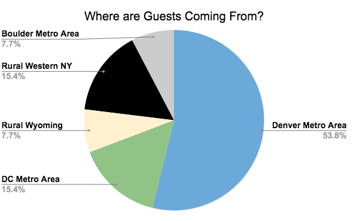

Updated as of 01/23/2021
Our goal is to have an intimate wedding and a fun post wedding backpacking trip
that is as close to normal as possible. In order to make that happen we are taking
COVID-19 very seriously and instituting a set of precautions to allow us to have a
small gathering of people in person without masks and social distancing. It is only
by following these precautions and continuing to monitor the evolving COVID-19
situation that we can make this wedding as safe as possible. All that said, there is
no such thing as “zero risk” and we feel that it is important to make you aware of the
fact that there will be a certain amount of risk associated with attending the wedding.
Wedding Details
The current guest list includes 13 people (including Ben and Rachelle). The wedding
itself will be held outdoors along the Colorado Trail. The reception will be held indoors
at the lodging location. All guests will be required to stay together at the lodging location
if they are planning on staying overnight. Here is a detailed breakdown of where guests are
coming from:

Weddings have been shown to be
super-spreader events
so we are doing our best to make sure that doesn’t happen. We have a responsibility:
- to ourselves to make sure this joyous occasion is as safe as possible
- to you all to make sure precautions are in place so that you can attend safely
- and to our local communities to hold the event with appropriate precautions to reduce the risk of community spread
We are placing our trust in you all to read through the following information in detail, follow the
requested precautions, and communicate openly with us about your concerns and questions. We are not
medical experts and are basing our recommendations on the latest information from the CDC and Colorado
Department of Health and doing our best to balance the risks and benefits. While we hope the situation
improves throughout 2021 we are expecting things to not be that much different come June and thus are
planning very conservatively.
COVID-19 Precaution Requirements
Generally the requirements are to self-isolate prior to traveling and to wear masks and practice social
distancing in public places. While we do not intend to require masks to be worn in the lodging
location or during the wedding ceremony, we are absolutely on board with people who feel better wearing
masks in such situations. Again if you have questions or concerns please get in touch with us.
Travel Requirements:
- Quarantine/Self-Isolate for 14 days prior to attending the wedding (this time can include travel
time). This means don’t see people not in your household without a mask on and socially distant.
- Essential errands such as getting groceries, medicine, etc. are totally fine as long as
you wear a mask and the establishment has a mask policy
- Going to work is totally fine if your work requires you to be in person and has a strict
COVID-19 policy including mask wearing, frequent sanitation, capacity limitations, etc
- The CDC is currently still recommending a 14 day quarantine
if you have potentially been exposed (via close contact) to COVID-19. A shorter quarantine
of 7 to 10 days is acceptable under certain circumstances such as a negative test result
- Wear masks and practice social distancing during your travels and when in any public place (i.e. rest stops, gas stations)
- Travel by private transportation (i.e. your personal vehicle)
- Please follow the CDC’s travel guidelines
(also here)
when preparing to attend the wedding.
- Lodging during travel should be one of the following:
- Campground/Dispersed Camping
- AirBnB/Hotel/Motel if it has a mask policy, separate facilities from other guests (i.e. not a shared
kitchen/bathroom in an Airbnb), and is following the proper local/state guidelines for operation
- Fill out this COVID-19 Symptom Form prior to departing to indicate that you have not had any symptoms in the two weeks leading up to the wedding.
- If you have access to testing, consider getting tested prior to traveling
- Upon return, please consider self-isolating for an 14 days (this is ultimately up to you though)
Wedding Requirements:
- Stay at the provided lodging with all other guests (this self-isolates all wedding guests)
- Wear masks when out in public places (i.e. hiking to the ceremony location, stopping for gas, walking around town)
- Wear masks when in close contact with the wedding photographer during the ceremony
- Practice appropriate personal hygiene including frequent hand washing with soap and water
Why the Precautions?
We want to have guests be able to stay together and be able to have an indoor reception after the wedding.
During the course of the wedding festivities we want people to be able to be in close physical contact
(i.e. hugging, handshakes) and not have to wear masks when indoors with other guests. The best way to do this
is to reduce the risk that guests have had contact with someone with COVID-19 prior to attending the wedding.
To give you some additional context for why this is important, here is an
online model
(developed by a team of researchers at MIT) that considers things such as room size, room ventilation, number of people,
mask compliance, and activities to determine how risky the situation is. Based on some rough estimates of the model input
parameters, having 13 people without masks in an indoor place is
very risky: there is a significant chance of airborne
transmission within 37mins (note this model assumes that a single person is COVID-19 positive and calculates the risk of them
transmitting it). This is why we think it is absolutely critical to have guests self-quarantine prior to attending and to wear
masks in all public places during their travels. If no guests are COVID-19 positive, then this risk or transmission essentially
drops to zero. Other ways to reduce the transmission risk include opening windows, maintaining good air circulation, and having
an air filtration system in place. We will do what we can to make sure these additional risk reduction methods are in place.
What About Flying?
While the risk of contracting COVID-19
during a flight is very low
(also
here),
the CDC still advises against air travel due to the need to be in close contact with people in airports where proper social
distancing and air circulation is not always possible. So while being in the actual plane is likely pretty safe, getting from
your home to that plane is quite risky and we believe that risk is not worth it.
What About Vaccines?
According to
Colorado’s vaccine rollout schedule
the general public will not be eligible to receive the vaccine until summer 2021. Most states have similar schedules which means most guests will not have
access to the vaccine prior to the wedding. Even if you are vaccinated, the CDC still recommends
maintaining similar precautions such as mask wearing and social distancing.
Certainly if you have access to the vaccine prior to the wedding you should get it. Please be respectful of other guests though and continue to follow the above listed precautions.
More Resources
- Please visit the CDC’s site
for more information on COVID-19.
- Case information for all states can be found here.
- Please check the stats of the state where you are coming from, the states you are passing through on your travels, and Colorado’s stats to help inform your decision making
- Detailed information on Colorado’s situation can be found here.
- Currently most counties in Colorado are in the Orange (high risk) level of the state’s safety dial
which restricts personal gatherings to no more than 10 people from no more than 2 households (again why self-isolating prior to traveling is so important).